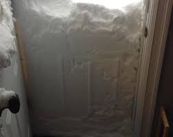
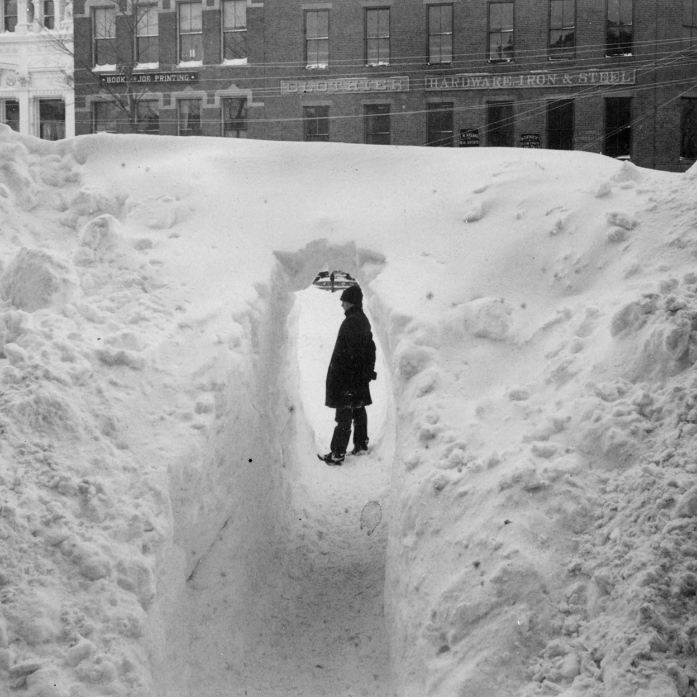
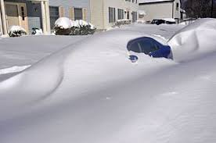
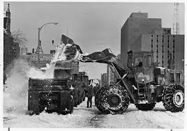

The Greatest Snow Storm
I awoke that early monring in January not realizing what had taken place over night. I could not believe the snow in the backyard. It looked like maybe we had recieved about a foot of snow. But the snow was covering the swings on the swingset. I went to the front window and noticed I could not see the roofs of cars. It became apparent that there was a lot more snow outside then I had orginially thought.

Immedately, I was excited because I knew there would be no school that day. My father was home and he told me that we needed to 'dig out' the car so he could go into work. I got dressed to go out into snow. As I opened the back door, a snow drift had completely burried our back porch. The porch door opened back into the porch and there was a wall of snow.
I jumped through the snow covered door frame and landed on the snow outside. The force of the jump caused my body to get stuck. I was covered from the chest down in snow; however, my feet were not touching the ground. It took me several minutes to figure out how to get out of the snow and walk.

My father came outside and we were able to get to the garage. He gathered shovles and we began to clear a path from the garage to the house. At first it was fun, then I started to realize that the snow was heavy and we were getting nowhere fast. It took us almost 4 hours to make a tiny path from the garage to the house.
It took us two days to make a path for us to be able to walk from the back to the front of the house. We were also able to make a path for us to use the sidewalk in front of the house. Then we began to dig out the car.
After about the 5th day, we began to run out of food. My mother and I walked to the grocery store. It was about a mile from out house. Due to the amount of snow, we had to walk in the street. Once we arrived at the grocery store, I was amazed at how little food they had on the shelves.

The city began to clean up the snow. It took almost two weeks before we were able to return to school. My father was off of work for 10 days. It was a snow storm to remember. That winter I made a lot of money shoveling snow, but the next year, I just wished that we would not get any snow.
